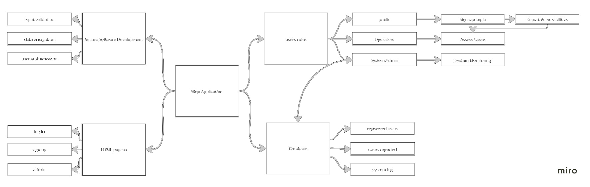

Welcome to my Information and Security Management Module Eportfolio .
Below you will find reflections, assignments and information gathered from all units.
Unit 1
Learning Outcomes: An intorduction to risk management
Having learned the basic fundamentals in secure software development, I became increasingly eager to explore into what could be considered the broader perspective: Risk Management. In this unit, various information security management concepts are introduced, providing awareness on different facets of the term "threat." Moreover, Unit 1 offers a comprehensive overview of risk assessment frameworks and mitigation strategies, which I think is essential in the journey toward developing a secure system. In summary, a risk management system consists of Risk Identification, assessment, and Reduction. I was also fond of learning about the key drivers of industry 4.0 and researching several organizations that under go the digitization process with such risk in consideration.
Discussion 1: The Risks of digitization
Industry 4.0 suggests a subsequent phase of evolution within the production and manufacturing process. This progression is particularly characterized by the essential role of technologies such as advanced robotics, artificial intelligence, and big data. Collectively, these technologies serve as the main driver of this digitization process (Kovaite & Stankevičienė 2019). However, Kovaitė and Stankevičienė (2019) argue that rapid digitalization in new business models provides a considerable array of risks including the lack of a structured framework to identify these risks. Nonetheless, Kovaite & Stankevičienė present a categorized list of potential risks among those, two prominent categories with their instances:
In accordance with Kovaitė and Stankevičienė (2019), Luo (2022) explores another type of risk known as Digital Regulatory complexity. This occurs as a result of different types of digitization regulations and standards imposed on enterprises. As such these practices performed by governments increase the potential of digital risks imposed on enterprises.
All references are recorded in unit 12.
Unit 2
Learning Outcomes: Introduction to Threat Modeling
After learning about various risk assessment methodologies, including quantitative and qualitative approaches, and becoming familiar with esteemed risk certifying bodies like Open FAIR and Octave, Unit 2 goes in depth into the process of risk identification while emphasizing the fundamental principles of threat modelling. Initially, I found myself somewhat overwhelmed by the number of frameworks available for threat modeling. However, as I progressed through the module, I gained a more profound understanding of the relevance of specific threat models based on the scale of the business and the types of assets involved. Furthermore, the module introduced me to a range of cyber threats, encompassing incidental, malicious, and insider threats, along with associated prevention techniques. What particularly stood out to me was the scalability and clarity of models like STRIDE and Attack Trees, which I believe can be effectively implemented and presented to stakeholders.
All references are recorded in unit 12.
Unit 3
Learning Outcomes: Threat Modeling techniques
Unit 3 provides further practical experience on applying thread modelling techniques on a real-world scenario. This week’s main focus was on assignment 1 which requires us to evaluate an emerging pet store business and provide a risk assessment report of the store’s current business and future business model. I was delighted to get firsthand experience in combining the business’s objectives with the associated risks related to their dataflow. I found that both STRIDE and Octave frameworks supported in the ISO 31000 risk management system is the best approach for such a small business. I think that these models are highly scalable and share several similarities in terms of the current and future business strategies of Pampered Pets. In addition, the unit’s lecture cast provided in depth knowledge on the several threat modelling frameworks and metrics such as PASTA, TRIKE and Open Fair.
E-Portfolio Exercise: Security Standards
According to the mentioned security standards, few regulations might apply to Pampered Pets. For instance, GDPR primarily focus on personal data protection, as such Pampered Pets are held accountable for the customer emails database and any information obtained from online transactions after the business’s digitization process. In this case, several protocols from the GDPR might apply such as:
Moreover, If Pampered Pets accepts credit card payments, whether in-store or online, they must adhere to PCI DSS. PCI DSS applies to any business that processes, stores, or transmits credit card data.
Although HIPAA might not apply Entirely, Pampered Pets sell products related to pet medications or medical records, in this case HIPAA considerations may come into play. Key HIPAA requirements that might apply include:
Ensuring that GDPR, PCI DSS, and HIPAA standards are being met involves a combination of assessments, audits, and ongoing monitoring. Checking if the standards are met involves the following procedures.
Assignment 1: Pampered Pets Risk Analysis
All references are recorded in unit 12.
Unit 4
Learning Outcomes: Cybersecurity frameworks
This unit provides comprehensive insights into cybersecurity frameworks, their core components, and the methodologies for their implementation. My eager dive into the steps of establishing security frameworks like NIST and ISO 27001. As I previously wondered about the necessary steps to take in the event of a security breach, I finally discover that this unit introduces disaster recovery plans, offering clarity on critical concepts such as recovery time objectives (RTO) and recovery point objectives (RPO). Additionally, it introduced me to the concepts of hot, warm, and cold standbys, recommended backup sites, and tailored best practices aligned with an organization's unique needs.
Collaborative Wiki Development: Security Framworks
According to the articles by Barafort et al (2018) and the blog by Kirvan (2021), the applicable standerds for each of these entites are illustrated below:
Internation Bank
- Standards
- Tests & Recommendations
Large Hospital
- Standards
- Tests & Recommendations
Large Food Manufacturing Factory
- Standards
- Tests & Recommendations
All references are recorded in unit 12.
Unit 5
Learning Outcomes: Testing
This unit explores the various testing modules offered by python such as pylint, unitest and flack8. I think this unit provides a clear approach on the testing strategies, especially during the codio exercise. I have learned how to import the testing scripts to my main file and incorporate testing models for each of my code block that presents different system features.
Team Notes: Week 5
During this meeting, the following work in progress topics were discussed:
The above points assisted us with identifying the required tools to build our application. That is because our design proposal will cover the processes and frameworks needed to execute the web app.
Portfolio Component: Cyclomatic Complexity
Cyclomatic Complexity in my opinion is still reelevated when it comes to developing a secure software. Cyclomatic Complexity is a quantitative measure of the complexity of a software program's control flow, and it can be used as an indicator of the potential risk and maintainability of the code. Higher CC values can indicate the likelihood od in introducing security vulnerabilities. Although CC is just one of many factors to consider in developing a secure software, it provides an overall matric of the level complexity of the code in which few initiatives can be taken to refactor the code and the value of test cases.
Artefacts: Testing
The unit test module in python is imported to conduct a test case on our previous regex syntax that validates the UK post codes. In the previous code, the built-in test in a from of a “for loop” was added to validate the user input. For the unit test to succeed, the built-in tester will be removed. A class will be created to test the validation function in the post code checker file. Several assert functions will evaluate if the post code is True. See the code below:
import unittest
import Unit4_Regex
class PostCodeTester(unittest.TestCase):
def test_Unit4_Regex(self):
self.assertEqual(Unit4_Regex.validate_uk_postcode("M1 1AA"), True)
self.assertEqual(Unit4_Regex.validate_uk_postcode("M60 1NW"), True)
self.assertEqual(Unit4_Regex.validate_uk_postcode("CR2 6XH"), True)
self.assertEqual(Unit4_Regex.validate_uk_postcode("23123123s"), True)
if __name__ == '__main__':
unittest.main()
Results
Ran 1 test in 0.018s
FAILED (failures=1)
Launching unittests with arguments python -m unittest test_postcodes.PostCodeTester.test_Unit4_Regex in F:\01_Documents\01_My_Academics\03_Essex University\03_04_NISM_SSD\04_Eportfolio\Codes
True != False
Expected :False
Actual :True
All references are recorded in unit 12.
Unit 6
Learthing Outcomes: Testing libraries
This unit was somehow and extension of the testing and debugging topics of the previous unit. I have continued to experiment with python built in testing libraries and linters that improves my code quality and structure. Since this week was the due date of our design document for the cyber security application, we have began testing out log-in and sign-up features of our software using these strategies.
Team Notes: week 6
This week was the due date for the design proposal. We conducted a series of workshops over the weekend beforehand to reorganize the structure of the design document. We previously planned that Richard and Charles will be in charge of the required database integration methods as well as the UML diagrams meanwhile Elise and myself prepared the secure software design tools and methodologies. Finally, we collectively proof read each other’s parts to ensure the clarity of the design proposal. We have also conducted several tests on the login and sign-up prototype which had the OTP integration and made sure that it followed the same logic as the UML diagrams that are presented.
Portfolio Component: Codio exercise
The following code in stylelint.py file contained few errors that prevented it from running properly. In the view version, Indentation was added along with a print statement in order for the code be executed properly.
def factorial(n):
""" Return factorial of n """
if n == 0:
return 1
else:
return n*factorial(n-1)
After running the flake8 module on the original code, the missing indentation error was returned in which the white spaces was viewed. In this case all the errors are viewed and amended.
All references are recorded in unit 12.
Unit 7
Learing Outcomes: Operating Systems
During this week, I explored the history and development of a typical operating systems and how an OS acts as the intermediary between computer hardware and software applications. It was also interesting to understand the common types of operating systems that are general-purposed and specific specialized environments. Furthermore, I have learned about the common measures to ensure the security of an operating system that includes limiting user preferences, use of strong authentication and monitoring the system.
Team Notes: week 7
This week’s meeting was challenging as we discussed the main framework where the web application would be built on. During our workshop we went through the blueprints for both Django and Flask. Since most of the team members were not familiar with Django framework, we have decided that Flask will the main farmwork as it is easy to understand and is prone to fewer errors and bugs. We have decided that I will be tasked with building the main interface, setting up the main HTML pages, CSS, Jscript as well as the client and server connections. Meanwhile Elsie will be responsible for creating the syntax for the log-in and sign-up module which will later be integrated with the main flask application. Richard and Charles will be tasked with building databases on MySQL and setting the connection protocol to the backend on my side.
Portfolio Component: Ontology
In computer Science, Ontology is referred to as an explicit specification of an abstract model. According to (Gaitanou, 2009), an Ontology Web Service language for example, aims to provide a catalogue for the development phase or any type of implementation technology that can assist an organization with getting up to speed with the right technology. However, OWS is an Ontology that is specific for the web domain. In other words, an Ontology of web services for instance, can be described as a formal knowledge or a set of concepts that provides the building blocks of Semantic Web Technology.
An example ontology relevant to this module’s Vulnerabilities Tracking Web App is provided below.
Artefacts: CLI With Python
A command shell that implements the following commands will be created with python. Please review the code here. source code.
All references are recorded in unit 12.
Unit 8
Learning Outcomes: Encryption
Cryptography was one of the most challenging topics to grasp. However, during this unit, I was able to understand by practicing encryption techniques first hand during the base69 algorithm codio session. I also explored several python modules that encodes and decodes inputted user data using the cryptography.fernet and testing the output of the encrypted text. Since I mostly understand the process of encryption using this function, we are planning to use this technique in our web application to encrypt the user data before sending it to the database.
Discussion 2: Cryptography
TrueCrypt is an open-source encryption tool that was available for operating systems such as windows, Mac and Linux. TrueCrypt provided its users with real-time encryption of data by creating a virtual disk and viewing random data until it is decrypted. In 2014, TrueCrypt was discounted and father maintenance operations were ceased (Roach, 2022).
During the same year, a cryptanalysis conducted on TrueCrypt by Junestam & Guigo (2014) revealed several vulnerabilities, some which are considered high in severity. However, the findings suggest no evidence of intentional malicious code and is rather prone to bugs. From my point of view, I disagree with the authors statement as most of the vulnerabilities that are discovered can be addressed if the code is maintained. On the other hand, the two main potential weaknesses as revealed by the audit presents a huge factor in determining the software’s reliability:
Volume Header key derivation algorithm: Weak validation of driver letter symbols. TrueCrypt uses the minimum iteration count using the current algorithm in which brute force attack can be performed.
Sensitive information might be paged out from kernel stacks: A memory overflow can result in stacked data to be paged out to the hard disk. Therefore, allowing the attacker to access non-encrypted confidential data (Baluda, et al., 2015).
In my opinion, I would not recommend TrueCrypt as an encryption solution to a friend because of the lack of maintainability. All initiatives to fix current vulnerabilities in TrueCrypt are stopped, especially after the publishing of the weakness. Newer encryption tools such as VeraCrypt that provides modern security solutions is still maintained.
An ontology capturing TrueCrypt's weakness is presented below:

Artefacts: Cryptography With fernet
A simple encryption program is created using a the fernet algorithm module. The user will input a text to that will be encrypted then decrypted in the terminal window. The functions will use the encode_text() and decode_text() objects provided by fernet. Please review the code here. source code
All references are recorded in unit 12.
Unit 9
Team Notes: Week 9
As we approach the deadline, we setup a series of mini workshops to begin testing our code. First, I had to present the logic behind the HTML that was created to familiarize the team members with the Jinga syntax that connects the html with the python code. Second, we have discussed the front end of the web application, how the users will access the login-page and view the current vulnerabilities pages. This workshop also aims to ensure that all team members have the required Flask packages installed on their system and that the main.py file is connected to Richard’s and Charles databases.
Unit 10
Team Notes: Week 10
We have conducted many meetings during this week mainly to ensure that Elise’s login and sign-up features are working. We had to test if the user input is recorded, encrypted and sent to the database. There were other challenges that we faced trying to integrate the pyOTP module and the QR code generation to authenticate the user. We tried to work on the popup window that generates the QR code and OTP for authenticating the user. On the other hand, Richard was working to connect his database of current vulnerabilities to the HTML webpage while Charles worked on the admin page that contained the system log information and the registered users tables. We aim to constantly update and debug the main.py file with the new code blocks from each team member.
Portfolio Component: Facated Data
According to Schmitz et al (2016), public and private are two types of faceted data. Failing to ensure secure flow of information may result in a data leakage in both data types. Therefore, faceted values that are assigned to data types protects unauthorised viewers from observing it. Thus, I think it is good practice to protect systems from data leakage, specifically private data. Although this approached contributes to the increased complexity of the code, Schmitz et al (2016) introduces the process of integrating faceted language as a library rather than modifying the actual code.
All references are recorded in unit 12.